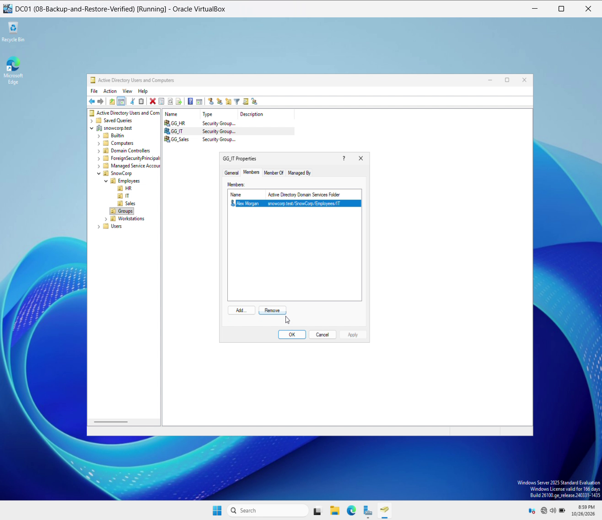

COMPLETEDPERSONAL PROJECT · OCT 2026
SnowCorp
A company network.
Built, secured and tested.
Two virtual machines became a working Windows domain: employee accounts, department permissions, security policies, event investigation, and a verified file restore.
Read the case studyACTIVE DIRECTORY / ACTUAL LAB CAPTURE↗

From configuration to verification.Real accounts, tested access, recorded results.